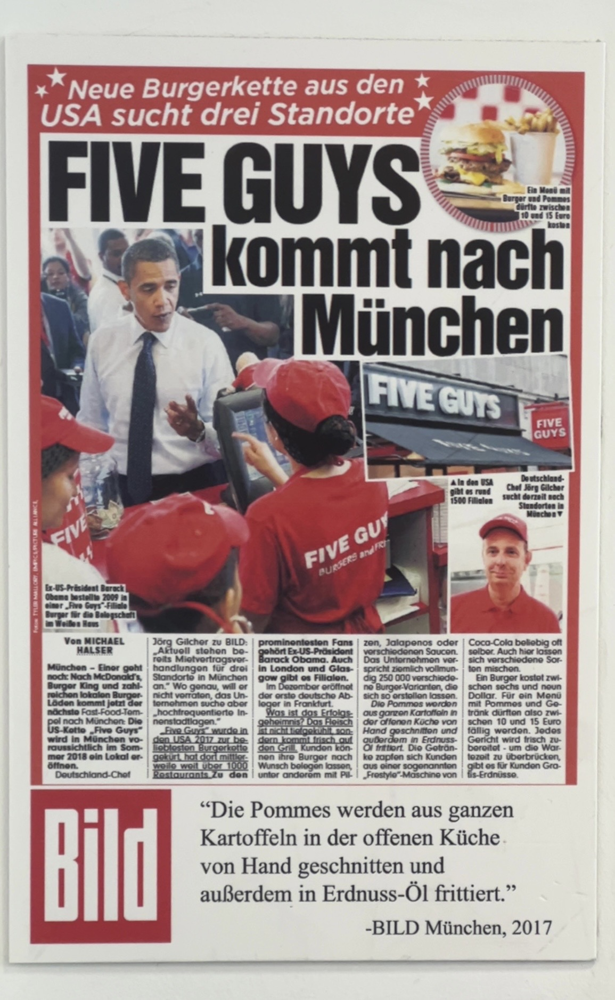

Utkarsh Jain
Machine Learning Engineer
I'm an MLE based in Brooklyn, NY, focused on LLMs, agentic systems, and RAG pipelines. I've shipped enterprise-grade AI in production — multimodal agents, document intelligence, and self-healing code systems — at startups moving fast. Outside of work, you'll find me on a badminton court, boxing, or on a bike.
Work
Experience
- Built multimodal deep search agent using MCPs and reciprocal rank fusion to intelligently query client databases
- Shipped report-writing agent generating 70+ page documents at 92% precision and recall
- Deployed agentic workflows on Temporal and Kubernetes in production
- Built extraction engine converting unstructured legal documents (emails, invoices, court filings) into structured data with custom schemas
- Engineered Matter Intelligence — a context engineering feature that reduced legal document review from weeks to hours
- Built a self-healing code agent with near-zero hallucinations using LangGraph
- Engineered a multimodal ingestion pipeline enabling the core product to extract insights from non-scannable documents containing images, charts, and diagrams
- Curated a dataset with 800K+ data points applying rigorous data cleaning and mining practices
- Stress-tested Pinecone & Qdrant vector stores with synthetic data; evaluated recall and query response times at scale
- Automated APAC portfolio management workflows in Python, saving ~200 man-hours
- Revamped a legacy RPG API with Node.js and performed network load testing with JMeter
Projects
Machine Learning & AI
9 projects
▶
Can an AI spot a face that was never real? Pitted two vision models head-to-head on a custom deepfake dataset to find out.
Fine-tuned ViT and DINO transformers on a custom deepfake dataset; controlled ablation across activations and dataset splits measuring accuracy, F1, and ROC-AUC.
The strongest predictor of NYC rent isn't bedrooms — it's bathrooms. Scraped StreetEasy and Zillow, pulled in census data, and let the model settle it.
End-to-end pipeline scraping StreetEasy + Zillow, merged with census data; XGBoost + NN regressors predicting NYC apartment prices.
Trained an AI to recognise food. Put it on the internet. Threw thousands of requests at it. Watched what broke — then scaled it.
Transfer learning on Food-11, deployed on Kubernetes with HPA, load-tested with Siege — full train-deploy-scale-observe loop.
What if your neighbour could buy your leftover solar power? Simulated the entire P2P market — with real scraped PV data, not synthetic numbers.
Multi-agent simulation of a P2P solar energy market with real scraped PV data, two iterative model versions.
Getting a drone across a city without hitting anything is harder than it looks. Built the path planner — and the logic that actually flies it.
A* path planning with multiple heuristics for autonomous drone navigation in a simulated urban environment.
Which patients look alike when you strip out the labels? Clustered a real stroke dataset two different ways — and the groupings disagreed.
Patient risk clustering on real healthcare stroke dataset using Euclidean and Jaccard similarity metrics.
A straight line or a curved one — which shape separates faces from not-faces better? Ran the experiment to find out.
Linear and kernel SVM classifiers trained for face patch detection.
Treat every pixel as a dot. Group the dots that look alike. The image repaints itself in the process.
K-Means pixel clustering for image segmentation with visual comparison across different k values.
What makes an article go viral on Mashable? Trained a model on 40,000 articles — turns out topic matters more than word count.
Regression models (Linear, Ridge, Random Forest) predicting Mashable article share counts.
Computer Vision
4 projects
▶
Your face gets you in. Your fingers tell it what you want. No keyboard, no mouse — just you.
Python app using MediaPipe hand tracking and face recognition for touchless ticket counter interaction.
Find the most visually similar image in a database — without Google, without a neural net. Three retrieval strategies, one ranked output.
Multithreaded CBIR system with edge extraction, feature descriptors, and combined retrieval strategies.
The image starts fully blurred. Your hand reveals it.
JavaScript web app using ml5.js HandPose for real-time touchless image editing via webcam gestures.
What if the detector can't see in the dark? Used one AI to brighten the image before the other AI looked at it.
Research study on using DCGAN image enhancement + Faster R-CNN for object detection in low-light conditions.
Information Retrieval
4 projects
▶
A search engine that sifts through 3.2 million documents — but only reads the ones it absolutely has to. The trick? Making C++ pretend it's Python.
C++20 coroutine-based lazy generator for streaming inverted lists; conjunctive merge and MaxScore pruning driven by compiler-managed coroutine state.
A web crawler that refuses to read pages saying the same thing — even when the URLs look completely different. It understands meaning, not just addresses.
SentenceTransformer embeddings used for near-duplicate filtering before pages enter the crawl frontier — semantically diverse crawl over URL-hash dedup.
Why search the whole library when you can route the question to the one shelf that matters? Built the system that decides which shelf.
Dense embeddings → PCA → UMAP → 16-cluster sharding; queries routed to a single shard rather than scanning the full corpus.
Built a searchable index over 3.2 million documents in C++ — without ever loading more than a fraction of them into memory.
C++23 threshold-based intermediate dump-and-merge index construction over 3.2M MARCO documents; memory-bounded at any corpus size.
Systems & Algorithms
7 projects
▶
What does a command prompt actually need to work? Built one from scratch — turns out it's mostly about where signals go when you hit Ctrl+C.
Full Unix shell with foreground/background process management, signal handling (SIGCHLD, SIGINT, SIGTSTP), and built-in commands.
Five threads, thirteen article categories. It doesn't stop until every single category has been covered.
3 crawler + 1 classifier + 1 strategy manager threads synchronised with pthreads, semaphores, and mutexes.
CPU-hungry tasks sink to the bottom. Quick ones float to the top. Built three different strategies and watched them compete on the same workload.
C++ simulation of three scheduling algorithms with Gantt chart output and comparative performance analysis.
Three different ways to keep a sorted list balanced as it grows — all built from the ground up, no shortcuts, no libraries.
Custom Python implementations of k-ary Heap, BST, Red-Black Tree, Splay Tree, and Treap from scratch.
A group chat — built from scratch, over raw sockets, with no messaging framework in sight.
Multi-client bulletin board over raw TCP — POST writes a dot-terminated message to the shared board, READ pulls every message any client has posted. All protocol state in plain socket send/recv, no framework.
The same program running across a thousand machines at once, counting words in millions of documents — and not a single line of code tells it how to split the work.
Canonical MapReduce Word Count in Java on Hadoop demonstrating distributed processing fundamentals.
A poker hand evaluator that works for any number of cards dealt — with tests covering every hand type and every edge case I could think of.
Java poker hand evaluator with JUnit 5 test suite covering all hand types and edge cases.
Cloud & DevOps
3 projects
▶
A restaurant recommendation chatbot — built entirely out of cloud services that only exist for the split second they're answering you.
Fully serverless restaurant chatbot: Lex v2 → 3 Lambdas → DynamoDB + ElasticSearch, seeded by a custom Yelp scraper.
Deployed a web app to the cloud — then gave it an alarm system that goes off the second anything misbehaves.
Flask + MongoDB on AWS EKS with Prometheus + Alertmanager observability stack and IRSA least-privilege access.
Upload a photo of your dog. Search for 'dog'. It shows up. You never labelled it — the AI did.
S3 upload → Lambda → Rekognition auto-labels → OpenSearch index; fully event-driven keyword photo search.
Full Stack & Databases
4 projects
▶
A full social media app — posts, follows, real-time chat — built and deployed end-to-end from scratch.
MERN social platform with real-time Socket.io chat, JWT auth, Cloudinary media, deployed on AWS Amplify.
A food pantry app where the database itself enforces the rules — not the code wrapped around it.
Flask + React + PostgreSQL with SQL triggers and stored procedures keeping business logic inside the database layer.
A restaurant booking and ordering system built like a real product — two versioned releases, bug reports, and a full test suite.
Full Java desktop app for restaurant booking, ordering, and payments — full SDLC with two releases.
The same query, ten times faster. Here's every optimisation step — and the evidence that each one actually helped.
Systematic EXPLAIN ANALYSE profiling with iterative indexing and query restructuring; measured speedup documented at each step.
Skills
ps. i also like to click photos

